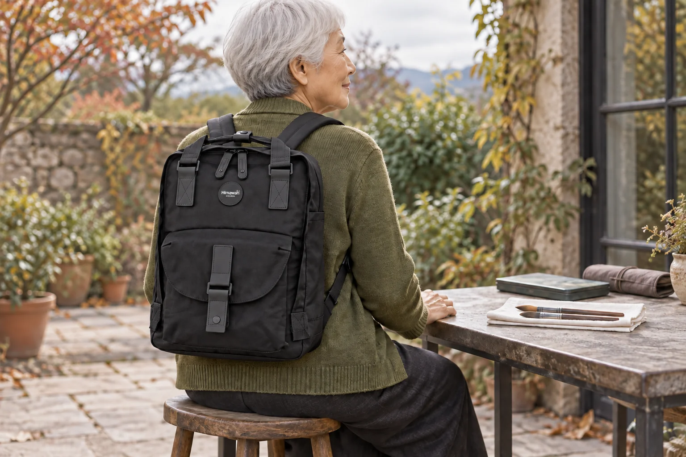

수채화 수업 뒤의 백팩, 젖은 도구 묶음이 돌아올 자리

수채화 수업에 갈 때 펼쳐 둔 짐에는 마른 붓과 닫힌 물감, 종이 묶음이 있습니다. 돌아오는 짐에는 사용한 도구와 포장이 더해집니다. 출발할 때 자연스럽게 닫혔던 백팩도 이 상태를 그대로 받아들일지는 따로 봐야 합니다. 수업용 가방을 준비할 때에는 마른 도구의 자리와 사용 뒤 돌아올 묶음의 자리를 함께 생각합니다. 사용한 도구 묶음이 돌아온 뒤에도 개인 서류와 연락 도구의 자리가 남는 구성을 골라봅니다.
출발 전에는 수업에서 요구한 준비물을 모은 뒤 가방에 계속 남길 개인 물건을 구별합니다. 지갑과 연락 도구, 이동 자료까지 미술 도구 사이에 흩어 넣으면 수업이 끝난 뒤 각각을 꺼내기 어렵습니다. 개인 소지품의 작은 묶음과 수업에서 통째로 꺼낼 묶음을 나누어 놓습니다. 어느 한쪽을 꺼낼 때 다른 쪽의 상태를 바꾸지 않아도 되는 구성을 먼저 찾습니다.
가방 안에 남는 것과 작업대로 나오는 것
수업 자리에서 백팩 전체를 열어 둔 채 도구를 하나씩 가져다 쓰는 방식을 떠올릴 수 있습니다. 이때 열린 입구 옆으로 물이나 재료가 오갈 수 있다면 놓는 자리를 바꿀 이유가 있습니다. 필요한 도구 묶음을 먼저 꺼내고 가방은 안내된 보관 위치로 옮기는 방법도 있습니다. 가방의 작은 포켓을 작업 중 생기는 소품의 임시 수납함으로 계속 쓰지 않으면 개인 물건의 위치를 유지하기 쉽습니다.
작업할 종이와 도구 상자의 크기를 비교할 때에는 포장된 전체 모양을 봅니다. 붓 끝만 덮는 소품과 도구 전체를 담는 케이스는 차지하는 외형이 다를 수 있습니다. 가방 입구에 맞추기 위해 도구를 임의로 접거나 붓을 휘게 놓지 않습니다. 실제로 안내된 보관 상태가 백팩 안에 놓이고 다시 꺼내지는지 확인합니다. 수업 가방의 크기를 정하는 대상은 낱개 도구보다 운반할 묶음입니다.
사용한 도구를 가져올 별도 보관품이 있다면 출발할 때 비어 있어도 함께 준비합니다. 평소 짐을 넣은 뒤 그 보관품이 돌아올 자리를 남겨둡니다. 빈 주머니를 납작하게 접어 가져갔다면 채워졌을 때의 크기가 달라집니다. 가방의 빈 공간 하나를 기억해 두기보다 수업 뒤 어떤 묶음이 생길지 생각하면, 아침에는 보이지 않던 부피가 선택 기준에 들어옵니다.
사용한 묶음 앞에서 백팩을 먼저 닫지 않는다
수업이 끝나면 도구를 각 안내에 맞게 정리한 뒤 운반할 상태를 봅니다. 젖은 도구를 둘 수 있다고 명시된 소품을 쓰는지, 닫힌 용기에 넣는 구성이 맞는지 해당 안내를 확인합니다. 준비된 보관품을 어디에 둘지 정한 뒤 종이와 개인 기기를 함께 놓아봅니다. 현재 구성으로 이동하기 어렵다면 수업 장소에서 가능한 정리 방법을 먼저 알아봅니다.
백팩에는 마른 개인 물건의 위치를 남깁니다. 수업 도구를 모두 꺼낸 빈자리에 서류를 옮겼다가 사용한 도구를 다시 넣으면 순서가 꼬일 수 있습니다. 개인 묶음은 가능한 한 그 역할을 유지하고, 돌아오는 도구 묶음을 넣을 구역을 따로 비교합니다. 실제로 서로 맞닿지 않을 공간이 생기는지 보고, 모양만 나뉜 작은 주머니를 필요한 분리 조건의 전부로 생각하지 않습니다.
Himawari No.200의 카탈로그 외부 크기는 28 × 39 × 15cm입니다. 수채화 수업용으로 검토한다면 도구 보관함과 종이 묶음의 외형을 이 바깥 규모에 단순히 맞추는 것으로 끝내지 않습니다. 안쪽 입구와 닫힌 상태, 사용 뒤 커진 묶음을 꺼낼 여유를 확인합니다. 사용한 도구의 묶음은 개인 서류와 직접 맞닿지 않는 위치에 두고, 함께 담을 공간이 없으면 운반 가방을 나누어봅니다.

별도 가방을 더할지 결정할 순간
사용한 도구의 운반 묶음 때문에 백팩의 여밈이 당겨지면 다른 소지품을 더 눌러 넣기보다 구성을 나누어봅니다. 개인 물건은 백팩에 남기고 도구는 용도에 맞는 별도 가방으로 운반할 수 있습니다. 두 가방을 쓰기로 했다면 어느 손에 무엇을 들지, 수업장에서 무엇을 먼저 내려놓을지까지 정합니다. 별도 가방을 백팩의 장식이나 지퍼 손잡이에 매다는 방식으로 합치지는 않습니다.
가방을 나누는 선택이 번거롭다면 다음 수업에는 무엇을 줄일 수 있는지 준비물 목록을 대조합니다. 수업에서 필요한 도구를 임의로 빼기보다 현장에 두거나 제공받을 수 있는 것이 있는지 알아볼 수 있습니다. 도구 자체의 운반 조건을 바꿀 수 없다면 가방 선택을 바꿀 이유가 됩니다. 백팩 하나를 계속 쓰는 목표와 수업에 필요한 물건을 가져오는 목적을 함께 놓고 판단합니다.
귀가 길에 다른 장소에 들를 계획이면 사용한 묶음을 계속 들고 있을 시간도 늘어납니다. 이때 필요한 조건을 유지할 수 있는지 사용 중인 보관품의 안내에서 확인합니다. 관리할 상태의 물건을 닫힌 백팩에 남겨둔 채 다른 일정까지 이어가는 구성이 적절한지 생각해봅니다. 백팩을 잠깐 보관할 곳이 있다면 시설 안내를 따르고, 꺼낼 개인 물건은 접근 가능한 묶음에 남깁니다.
집에 도착하면 사용한 도구 묶음부터 가방 밖으로 옮깁니다. 작업 도구와 보관품의 관리는 각각 이어가고, 백팩의 안쪽에 남은 물기나 재료 흔적이 있는지 봅니다. 가방에서 무엇을 꺼냈는지 분명해야 개인 서류가 어디에 있는지도 찾을 수 있습니다. 사용한 보관품을 다시 백팩 안에 넣는 시점은 그 물건의 정리가 끝난 상태를 기준으로 합니다.
가방에 흔적이 보이면 부위와 상태를 남기고 해당 제품의 관리 안내를 읽습니다. 도구 세척에 쓴 방법을 가방에도 그대로 적용하지 않습니다. 어떤 물건이 어느 면과 닿았는지 알아두면 다음 수업의 배치를 바꾸는 데 도움이 됩니다. 필요한 경우 가방의 전체 모습과 가까운 사진을 준비해 문의할 수 있습니다. 수업에서 쓴 재료의 이름과 가방의 소재는 다른 정보로 전달합니다.
다음 준비에서 바꿀 것은 실제로 번거로웠던 한 장면으로 고릅니다. 작업대에 올라간 백팩 입구가 불편했는지, 사용한 묶음이 커져 여밈이 닫히지 않았는지에 따라 필요한 변화가 다릅니다. 준비물의 수만 세기보다 출발할 때와 돌아올 때의 운반 모양을 나란히 놓습니다. 두 상태에서 개인 물건의 자리가 유지되는 가방 구성을 찾으면 수업 뒤의 정리도 가방 밖에서 이어갈 수 있습니다.